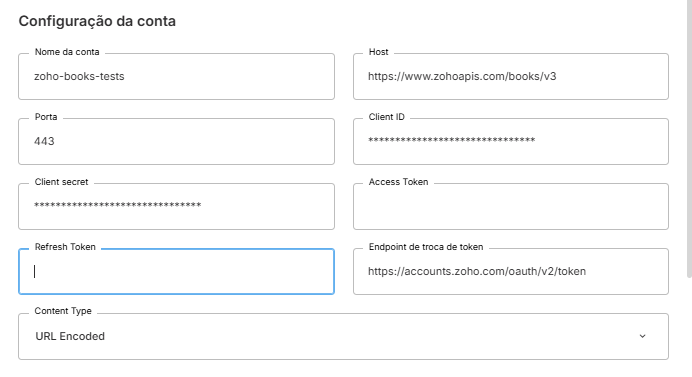

Fluxo usando o Skyone Studio
Os exemplos a seguir usam o template de conector do Zoho Books. Consulte a documentação específica do conector para detalhes sobre nomes de operações, campos e comportamentos particulares.
1. Criar a URL de redirect no Studio
No Skyone Studio, acesse API Gateway, crie um Gateway e uma rota sem autenticação. Essa rota será a sua redirect_uri.

Para visualizar a URL completa gerada, clique em Editar a rota depois de criá-la.
Por outro lado, você pode usar um Webhook do Studio como receptor. O princípio é o mesmo: qualquer URL acessível publicamente que aceite uma requisição GET com um parâmetro de query pode funcionar como redirect URI, para isso, insira num fluxo o gatilho de Webhook e guarde a sua URL.
2. Registrar a redirect URI na plataforma de destino
Essa etapa varia de acordo com a plataforma, consiste em, ao configurar a integração e receber o Client ID e Client Secret, registrar uma URL que pode ser usada como redirecionamento ou callback, inclua a URL criada no passo anterior.
3. Criar a conta conectada no Studio
No conector da plataforma alvo, crie uma conta conectada preenchendo os campos disponíveis (Host, Porta, Client ID, Client Secret, endpoint de troca de token etc.), mas deixe os campos de access_token e refresh_token vazios por enquanto.

Consulte a documentação do conector específico para saber quais campos são obrigatórios nessa etapa e quais valores utilizar.
4. Montar o fluxo de captura dos tokens
- Crie uma integração e um fluxo no Studio
Caso tenha criado um webhook, utilize o mesmo fluxo
- Adicione um gatilho de API Gateway e selecione o gateway e a rota criados no passo 1 (desnecessário caso tenha criado com webhook)
- No gatilho, adicione um parâmetro de query com o nome
code - Adicione o módulo do conector da plataforma alvo e escolha a operação de obtenção do Access Token (o nome exato varia por conector; consulte a documentação específica)
- Nos parâmetros da operação, preencha o Client ID, o Client Secret e a redirect URI; para o campo
code, arraste o parâmetro de query criado no gatilho - Ative o fluxo
5. Realizar a autenticação
Acesse a URL de autenticação da plataforma no seu navegador. Cada plataforma possui uma URL própria, como essa:
https://{URL}/auth?scope={scopes}&client_id={client_id}&response_type=code&access_type=offline&redirect_uri={redirect_uri}
Onde:
{plataforma}— domínio específico da plataforma (ex:zoho,xeroetc.){scopes}— permissões que os tokens devem ter; consulte a documentação da plataforma para os valores corretos{client_id}— o Client ID registrado no passo 2{redirect_uri}— a URL do gatilho criado no passo 1
Ao fazer login e autorizar o aplicativo, você será redirecionado para a sua rota do Studio. O fluxo será executado automaticamente.
6. Recuperar os tokens nos logs
Volte ao fluxo no Studio e acesse os logs da última execução. Na execução do módulo de obtenção do token, você verá o access_token e o refresh_token retornados pela plataforma.
Caso o
refresh_tokennão apareça no log, verifique se o parâmetro correto para emissão offline foi incluído na URL de autenticação (passo 5).

7. Atualizar a conta conectada
Com os tokens em mãos, volte à conta conectada criada no passo 3 e preencha os campos de access_token e refresh_token.
Algumas plataformas exigem configurações adicionais na conta após esse passo, como marcar uma opção de envio de parâmetros via query string ou adicionar headers específicos. Consulte a documentação do conector específico.
Após concluir, caso necessário, considere desativar ou excluir o fluxo de captura para evitar que os tokens fiquem expostos nos logs de futuras execuções.
Fluxo usando o Postman
[!!!]
Considerações gerais
- O
access_tokentem validade curta (geralmente minutos ou horas). O Studio utiliza orefresh_tokenpara renová-lo automaticamente — por isso ele é indispensável. - O
refresh_tokenpode ter validade longa ou indefinida, mas pode ser invalidado se o usuário revogar o acesso ou se o app ficar inativo por muito tempo. Nesse caso, o processo de obtenção dos tokens deve ser repetido. - Plataformas diferentes usam escopos com sintaxes distintas (separados por espaço, vírgula ou em formato hierárquico). Consulte a documentação oficial da plataforma para montar a lista correta.
- O Client ID e Client Secret nunca devem ser compartilhados fora do ambiente de configuração do conector.